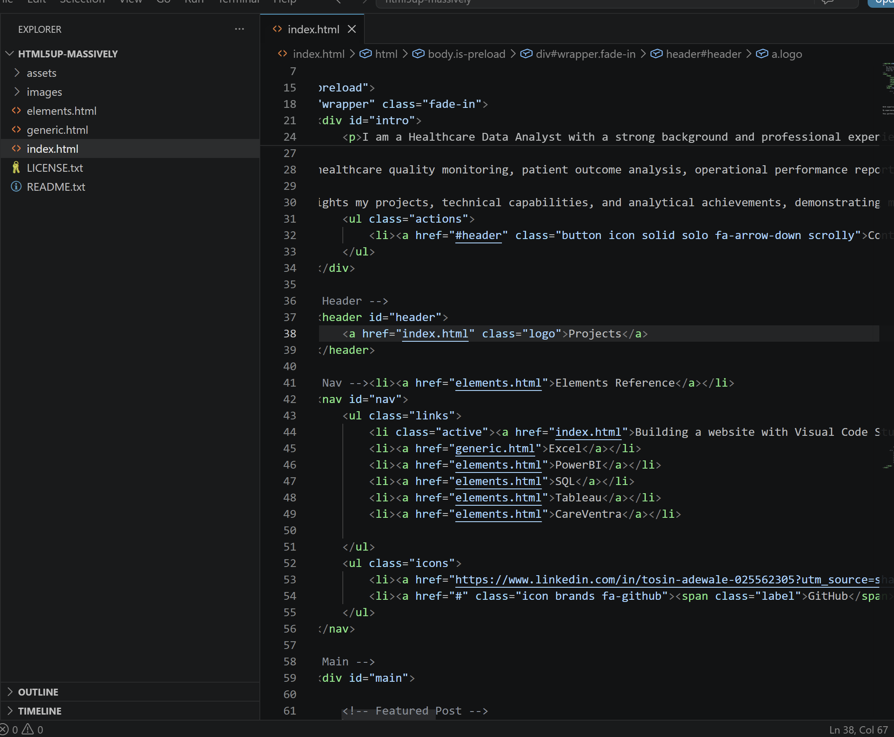
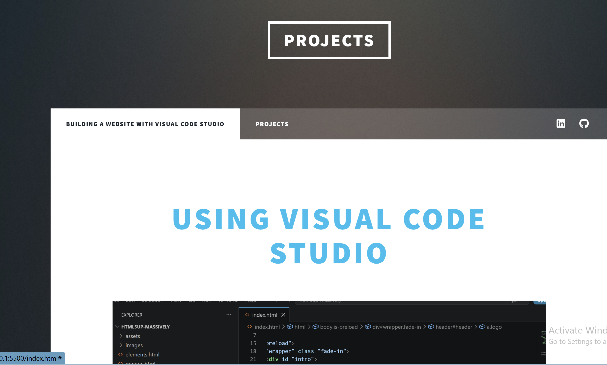
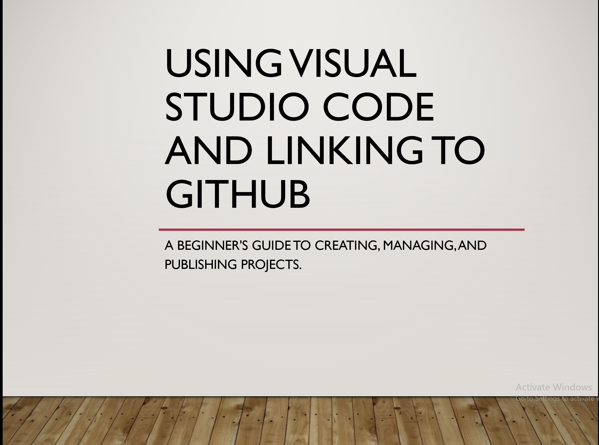

Using Visual Code Studio

I am a Healthcare Data Analyst with a strong background and professional experience in Health and Social Care, combining frontline sector knowledge with advanced data analysis skills to drive meaningful improvements in healthcare services and patient outcomes. My understanding of healthcare operations, patient care pathways, and social care systems enables me to interpret data within its real-world context and deliver insights that support evidence-based decision-making. With expertise in data analysis, visualization, statistical methods, and healthcare informatics, I work with complex datasets to identify trends, measure performance, and uncover opportunities for service improvement. I am proficient in tools such as SQL, Python, R, Power BI, Tableau, and Excel, which I use to create impactful reports, dashboards, and analytical solutions for healthcare stakeholders. My experience spans healthcare quality monitoring, patient outcome analysis, operational performance reporting, and population health insights. By combining my practical experience in Health and Social Care with analytical expertise, I help organizations make data-driven decisions that enhance service delivery, improve efficiency, and promote better health outcomes. This portfolio highlights my projects, technical capabilities, and analytical achievements, demonstrating my commitment to using data to support innovation and continuous improvement across health and social care settings... Tosin Adewale


I always believed that building a website required extensive coding knowledge and that it was something only professional developers could do. That perception changed when I discovered Visual Studio Code. While coding is still an essential part of web development, I quickly realized that with curiosity, problem-solving skills, and a willingness to learn, the code becomes much easier to understand and work with. Using Visual Studio Code allowed me to explore the structure behind websites, experiment with different features, and gradually build confidence in creating and customizing web pages. What initially seemed complex and intimidating became an engaging learning experience where I could apply logic, creativity, and technical thinking to solve problems.

As someone with a background in Health and Social Care and a growing interest in data and technology, this experience reinforced the idea that technical skills are accessible to anyone willing to learn. Building this portfolio has not only helped me develop new digital skills but has also strengthened my ability to adapt, learn independently, and embrace innovative tools. It has shown me that technology is not just about writing code—it is about creating solutions, telling stories through data, and continuously expanding your capabilities.